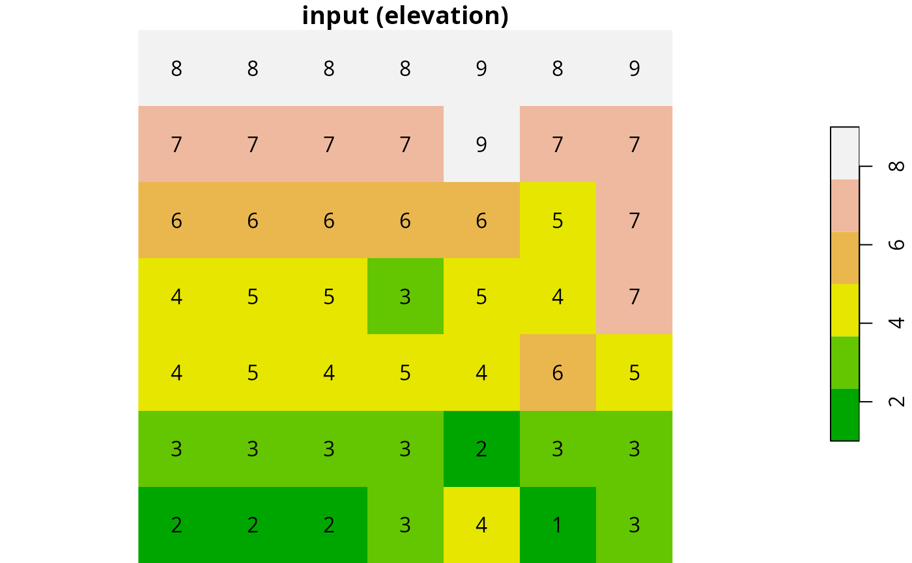
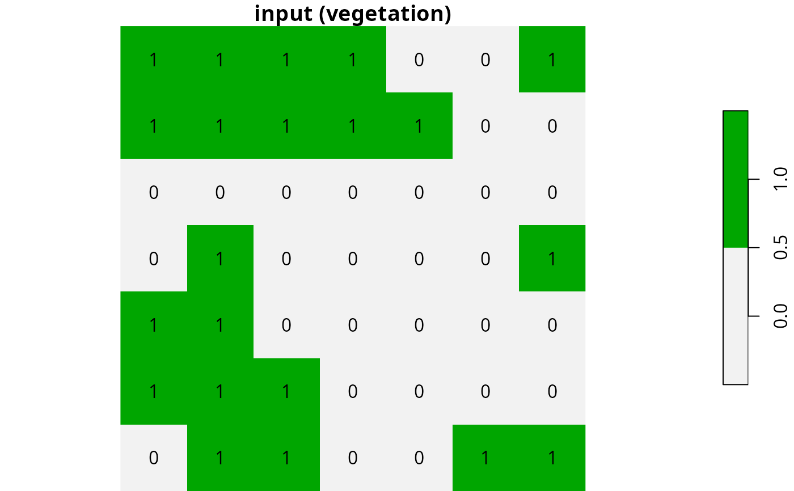
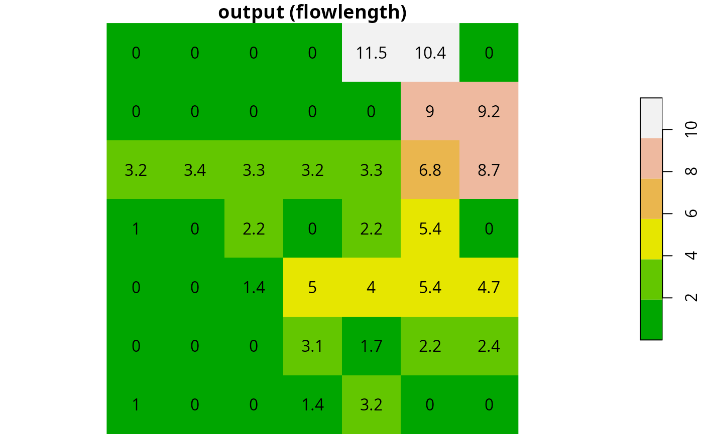
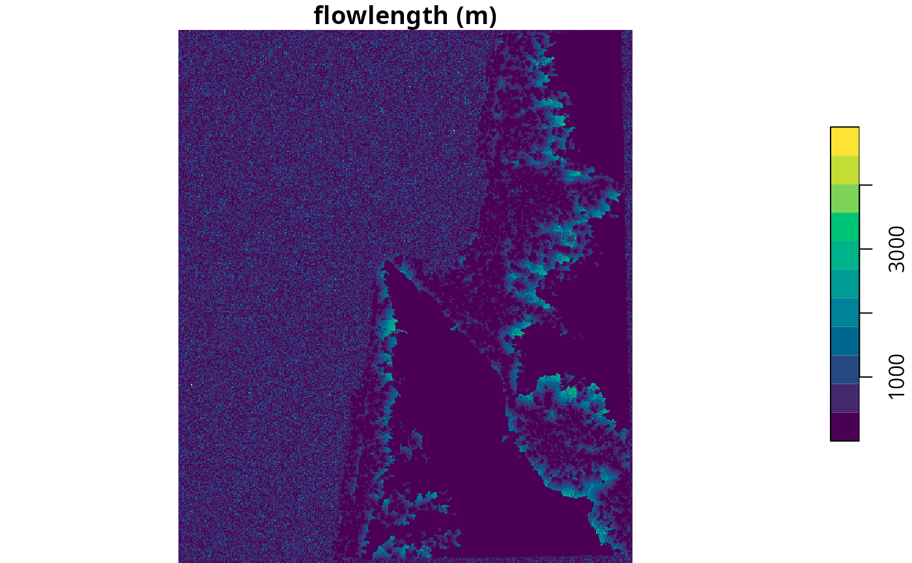

Calculates flow length for each pixel in a Digital Elevation Model (DEM) raster. Inputs and output are rasters of class stars, single-band (i.e., only `"x"` and `"y"` dimensions), with one attribute.
Arguments
- elev
A numeric
starsraster representing a Digital Elevation Model (DEM).- veg
A matching logical
starsraster representing vegetation presence.TRUEvalues represent vegetated cells where flow is absorbed (i.e. sinks),FALSEvalues represent cells where flow is unobstructed.- progress
Display progress bar? The default is
TRUE
References
The algorithm is described in:
Mayor, A. G., Bautista, S., Small, E. E., Dixon, M., & Bellot, J. (2008). Measurement of the connectivity of runoff source areas as determined by vegetation pattern and topography: A tool for assessing potential water and soil losses in drylands. Water Resources Research, 44(10).
Examples
# Example from Fig. 2 in Mayor et al. 2008
elev = rbind(
c(8, 8, 8, 8, 9, 8, 9),
c(7, 7, 7, 7, 9, 7, 7),
c(6, 6, 6, 6, 6, 5, 7),
c(4, 5, 5, 3, 5, 4, 7),
c(4, 5, 4, 5, 4, 6, 5),
c(3, 3, 3, 3, 2, 3, 3),
c(2, 2, 2, 3, 4, 1, 3)
)
veg = rbind(
c(TRUE, TRUE, TRUE, TRUE, FALSE, FALSE, TRUE),
c(TRUE, TRUE, TRUE, TRUE, TRUE, FALSE, FALSE),
c(FALSE, FALSE, FALSE, FALSE, FALSE, FALSE, FALSE),
c(FALSE, TRUE, FALSE, FALSE, FALSE, FALSE, TRUE),
c(TRUE, TRUE, FALSE, FALSE, FALSE, FALSE, FALSE),
c(TRUE, TRUE, TRUE, FALSE, FALSE, FALSE, FALSE),
c(FALSE, TRUE, TRUE, FALSE, FALSE, TRUE, TRUE)
)
elev = matrix_to_stars(elev)
veg = matrix_to_stars(veg)
# Calculate flow length
fl = flowlength(elev, veg, progress = FALSE)
# Plot
plot(
round(elev, 1), text_values = TRUE, breaks = "equal",
col = terrain.colors(6), main = "input (elevation)"
)

plot(
veg*1, text_values = TRUE, breaks = "equal",
col = rev(terrain.colors(2)), main = "input (vegetation)"
)

plot(
round(fl, 1), text_values = TRUE, breaks = "equal",
col = terrain.colors(6), main = "output (flowlength)"
)

# \donttest{
# Larger example
data(carmel)
elev = carmel
elev[is.na(elev)] = 0
veg = elev > 100
fl = flowlength(elev, veg, progress = FALSE)
plot(fl, breaks = "equal", col = hcl.colors(11), main = "flowlength (m)")

# }